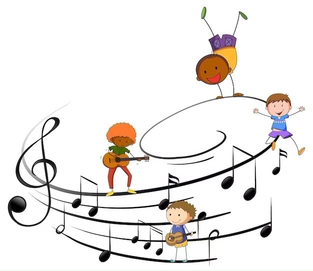

Child record management is the backbone of daycare operations, ensuring that essential details regarding each child's health, development, and individual needs are meticulously documented. Through efficient management systems, daycare providers can deliver personalized care, prioritize safety, and maintain clear communication with parents, fostering a secure and nurturing environment for children.
DetailsA guardian notification system enables seamless communication between daycare staff and parents, providing real-time updates on their child's activities, well-being, and important events. This ensures parents stay informed and reassured while promoting transparency and trust between the daycare center and families.
DetailsActivity and schedule planning are crucial components of daycare operations, ensuring that each child's day is structured with enriching experiences and routines tailored to their developmental needs. By carefully designing activities and schedules, daycare centers promote learning, social interaction, and a sense of security for children in their care.
 Details